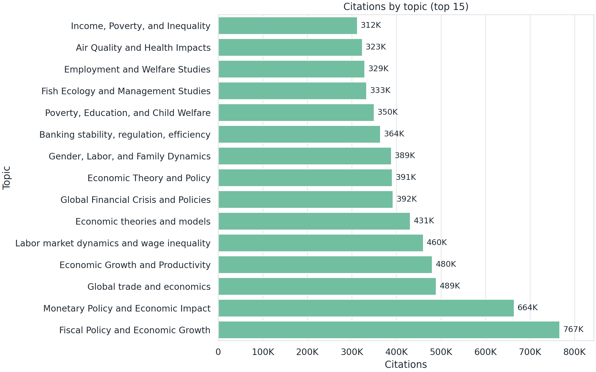
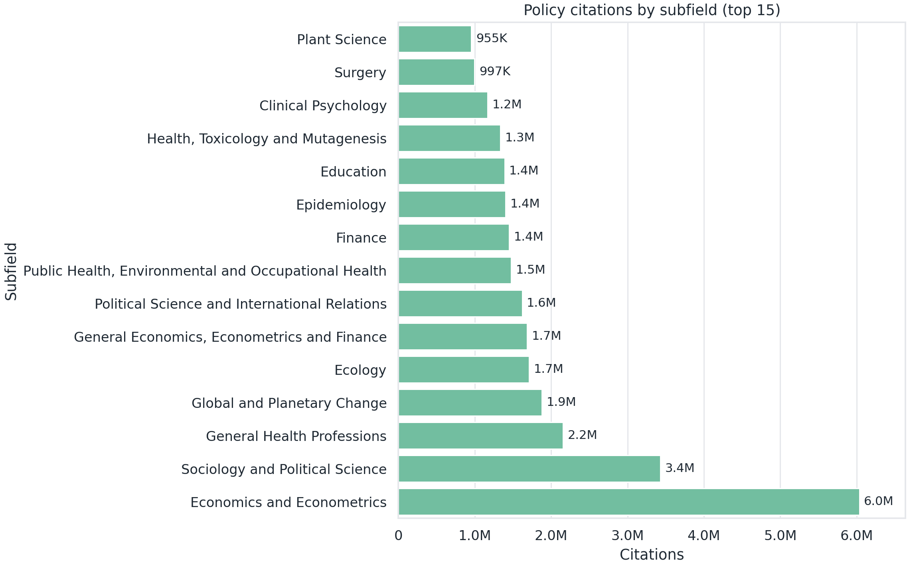
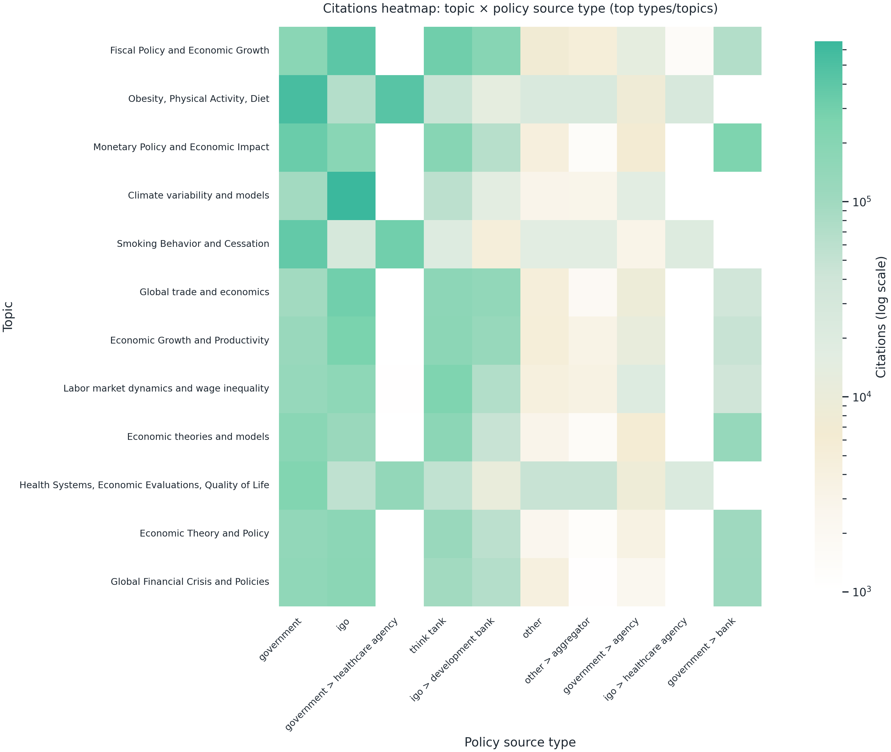
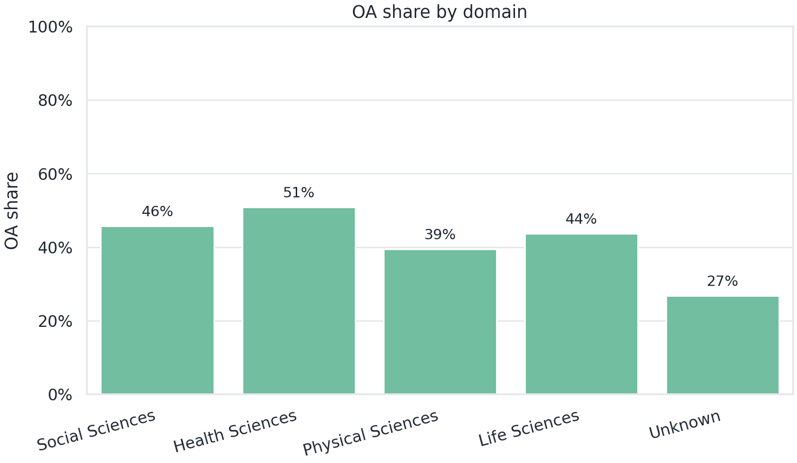
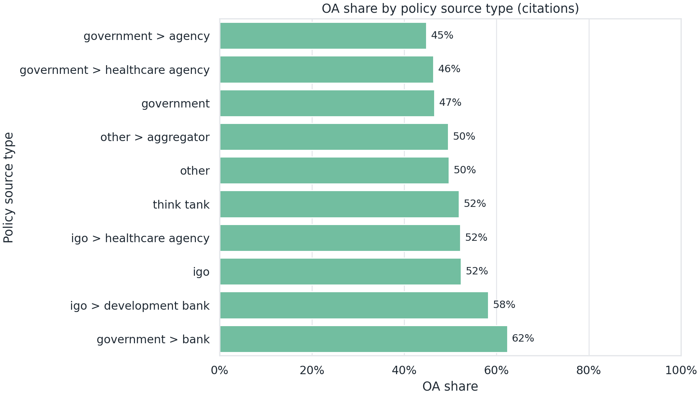
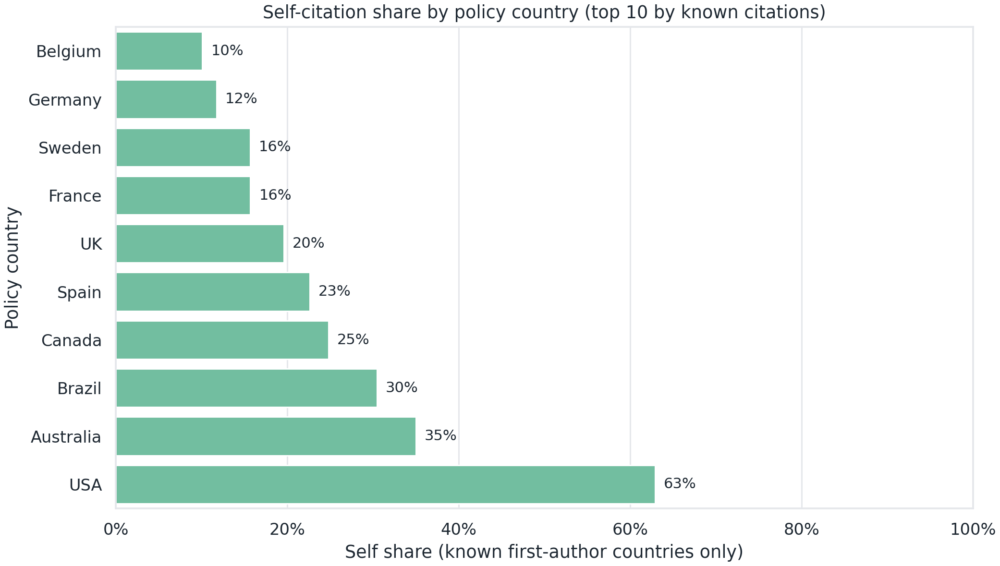
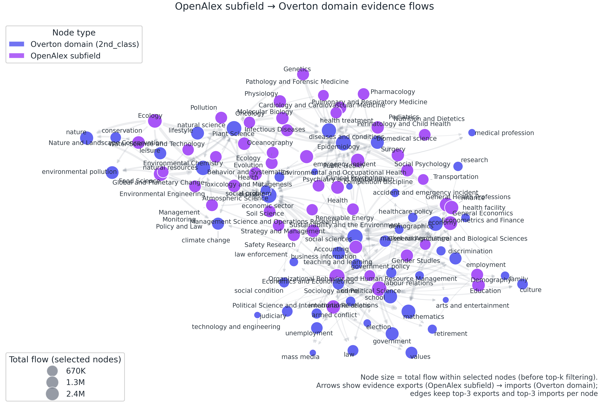

부록(데이터·정의·추가그림)
이 부록은 본문에서 지면상 생략된 세부 근거(커버리지·정의·추가 그림)를 한 덩어리로 묶었다.
권장 읽는 순서는 A → B → C다.
이 페이지에서 얻는 것(5줄)
- 국가·언어권 편향을 포함한 커버리지를 먼저 확인한다.
- 본문에서 쓰인 지표/집계 단위를 빠르게 찾아볼 수 있다.
- 토픽 다중라벨, 국가코드 결측, 관측 시차 같은 해석 주의를 한 곳에서 본다.
- 본문 그림을 보완하는 추가 그림(확장팩)을 묶음으로 확인한다.
- Hong Kong/Georgia 같은 예외 처리의 이유를 짧게 이해한다.
바로가기: A. 데이터 커버리지·태깅 · B. 정의·해석 · C. 추가 그림
처음 방문한 독자라면 A를 먼저 2분만 훑고, B는 필요한 항목만 펼치고, C는 참고 그림으로 보면 충분하다.
A. 데이터 커버리지·태깅
이 섹션은 “허브 구조”를 읽기 전에, Overton 정책 문헌의 관측 범위가 균등하지 않을 수 있음을 먼저 확인하기 위한 최소 근거다.
A1. 정책 문헌 커버리지 지도(정책 출처 국가별 문헌 수)
표시 기준(요약)
- 국가 태그 중 최상위 국가만 사용(예:
USA > California같은 하위 태그 제외) IGO/EU제외- 국가 간 편차가 커서 로그 스케일로 색상 표시
A2. 하위 태그(A > B)와 “최상위 국가만”을 쓴 이유
Overton의 정책 출처 국가 태그는 국가 단위(예: USA, UK) 외에 하위 지역 단위(예: USA > California)를 함께 포함한다. 본 보고서(요약본)는 OpenAlex의 국가코드와 의미를 맞추기 위해, 기본 집계에서 하위 태그를 제외하고 최상위 국가만 사용했다.
이 선택은 “국가 단위 비교”를 단순화하는 대신, 하위 태그 기여가 큰 출처에서는 국가별 비교가 과소/과대 해석될 여지를 남긴다. 따라서 본문에서 국가 비교를 읽을 때는, 커버리지 자체를 함께 확인하는 편이 안전하다.
A3. Hong Kong/Georgia 예외 처리는 왜 필요했나(현상→원인→조치)
정책 출처 국가 태그는 China > Hong Kong, USA > Georgia처럼 하위 태그로 관측될 수 있다.
최상위 국가만 쓰면 이런 하위 태그는 정책 출처 쪽에서 필터링되어 누락될 수 있어, 네트워크에서 정책 출처가 없는 것처럼 보이는 효과가 생길 수 있다.
그래서 네트워크 그림에서는 China > Hong Kong을 Hong Kong으로 분리했고, USA > Georgia는 Georgia (USA)로 분리했다.
자세히 보기: 하위 태그 규모, 예시, Hong Kong 표기
데이터 스냅샷: Overton 2025.02
아래 수치는 Overton 2025.02 스냅샷에서 계산한 요약이다.
- 정책 문헌 수 기준: 하위 태그 합계 200,381건, 전체 1,671,835건의 12.0%
- DOI 인용 기록 수 기준: 하위 태그 합계 3,488,024건, 전체 48,456,680건의 7.2%
여기서 “DOI 인용 기록 수”는 원본 기록 기준의 합계이며, 본문 6.1의 “정책 문헌→학술 DOI 인용 건수”처럼 분석용으로 정리한 수치와 집계 기준이 다를 수 있다.
하위 태그 기여가 큰 상위 부모(국가)는 대체로 USA, Spain, Canada, Australia, UK 순으로 나타난다.
하위 태그 상위 예시(정책 문헌 수 기준)
| 출처 국가 태그 | 정책 문헌 수 |
|---|---|
| USA > California | 17,599 |
| USA > New York | 14,110 |
| USA > Washington | 13,969 |
| USA > Alaska | 9,421 |
| Canada > Québec | 8,453 |
| USA > Texas | 7,648 |
| Australia > Western Australia | 7,169 |
| Spain > Catalunya | 6,632 |
| USA > Minnesota | 4,918 |
| Spain > Euskadi | 4,725 |
Hong Kong은 “중국으로 합쳐진” 것인가?
현재 스냅샷에서 Overton의 정책 출처에는 Hong Kong이 국가처럼 직접 등장하지 않고, China > Hong Kong 형태로만 관측된다(정책 문헌 1,182편). 반면 OpenAlex의 연구국은 HK → Hong Kong으로 별도 코드를 쓴다.
따라서 “최상위 국가만” 기준으로 정책 출처를 집계하면, China > Hong Kong에서 발행된 문서는 정책 출처 쪽에서 빠지고, Hong Kong은 연구국 노드로만 남아 인용만 되는 노드처럼 보일 수 있다.
실무적 주의: 하위 태그의 단순 치환은 충돌을 만든다
하위 태그를 무조건 A > B → B로 치환하면, 예를 들어 USA > Georgia(미국 조지아주)가 Georgia(국가)와 섞이는 동명이인 충돌이 생길 수 있다.
따라서 하위 태그를 국가 단위로 재귀속시키려면, (1) 부모 국가로 올리는 방식(A > B → A)과 (2) 예외 처리(홍콩처럼 별도 단위로 둘지)를 분리해 설계하는 편이 안전하다.
B. 정의·해석
이 섹션은 본문에서 사용한 집계 단위와 지표를 “필요할 때 찾아볼 수 있도록” 정리했다.
1) 데이터 단위 — 분석 단위와 DOI 매칭 범위를 확인한다
“97.6%가 DOI 논문을 인용한다”는 무엇을 뜻하나?
Overton 정책 문헌을 policy_document_id 기준으로 중복 제거해 고유 정책 문헌 1,381,084편을 만들고, 각 문헌이 DOI 기반 학술 인용을 1건 이상 포함하는지 여부를 집계했다.
그 결과 1,347,563편(97.6%)이 DOI 인용을 포함했다.
주의할 점은, 이 수치는 “정책 문헌이 학술 근거를 사용한다”는 방향성은 보여주지만 DOI가 없는 인용(서술 인용/보고서/법령/웹 등) 은 포함하지 못한다는 한계를 가진다.
참고로, 이 프로젝트에서는 Overton DOI 인용에서 추출한 DOI 목록(중복 제거 기준 약 687만 개) 가운데 약 95%를 OpenAlex works로 연결했다(약 653만 개). 나머지 약 34만 DOI는 OpenAlex에서 일치하는 레코드를 찾지 못했는데, 형식 오류는 소수였고 대부분은 DOI처럼 보이는 문자열이었다. 따라서 미매칭은 형식 오류보다 커버리지/정규화 차이의 가능성이 크다.
“중복 제거”는 무엇을 의미하나?
Overton 원본 정책 문헌은 같은 문헌의 버전/재게시, 언어 변형, 메타데이터 중복 등으로 인해 중복이 포함될 수 있다.
이 프로젝트에서는 분석 단위를 “고유 정책 문헌”으로 맞추기 위해 policy_document_id 기준으로 통합했다.
2) 지표 정의 — 핵심 지표의 분모와 계산식을 확인한다
“인용 건수”와 “고유 논문 수”는 왜 구분하나?
- 인용 건수: 정책 문헌이 DOI 논문을 몇 번 호출했는지의 총합. 즉 DOI 인용 기록의 개수
- 고유 논문 수: 인용된 논문을 “서로 다른 논문” 기준으로 중복 제거한 개수
정책이 “몇 번이나 근거를 호출했는가(빈도)”와 “얼마나 넓은 논문 풀을 썼는가(다양성)”는 다른 질문이어서 둘을 분리해 해석한다.
“최근성”과 “인용 강도”는 어떻게 계산했나?
- 최근성:
2022–2024발행 논문이 차지하는 정책 인용 비중
- 인용 강도: 집계 단위 내 고유 논문 1편당 평균 정책 인용수 =
인용수 / 고유 논문수
왜 1저자 소속국으로 정책 출처 국가→연구국 흐름을 정의했나?
가장 일관되게 추출 가능한 국가 속성이 1저자(First author) 소속국이었기 때문이다.
다만 공동저자 분포, 교신저자, 다기관 소속 등을 반영하지 못하므로 “대표성 있는 근사”로 해석해야 한다.
3) 해석 주의 — 다중라벨, 결측, 관측 시차 같은 주의점을 정리한다
토픽/도메인 집계에서 합이 100%를 넘는 이유는?
OpenAlex 토픽은 다중 라벨 구조다. 논문 1편이 여러 토픽에 동시에 속할 수 있어, 토픽/도메인/세부분야 기준으로 집계하면 중복 합산이 발생한다.
따라서 토픽 기반 수치는 “토픽 인스턴스 기준”으로 이해해야 한다.
이 프로젝트의 토픽 데이터에서는 정책 인용 1건이 평균적으로 약 2.8개 토픽에 연결된다. 그래서 도메인/토픽 기준으로 인용을 합산하면, “인용 건수”보다 큰 합계가 나온다.
다만 각 인용을 그 논문이 가진 토픽 수로 나눠 분할 집계해도, 도메인 순위는 유지되고 상위 3개 도메인 점유율도 큰 폭으로 변하지 않는다(예: 88.8% → 88.5%).
출처 국가/출처 유형 집계도 합이 커질 수 있나?
그럴 수 있다. Overton의 출처 국가/유형 태그는 상호배타적 분류가 아니라 태그 기반(상위–하위 동시 부여 포함)이라서, 문헌 1편이 여러 범주에 동시에 잡힐 수 있다.
연도 추세에서 2022년 이후 하락은 “정책이 과학을 덜 쓴다”는 뜻인가?
그렇게 단정하기 어렵다. 정책 문헌 수집/정리의 시차(커버리지 지연)와 발행 직후 인용 기록이 완전히 누적되지 않는 효과가 함께 작동했을 가능성이 크다.
따라서 최근 연도 수치는 “실시간 감소”라기보다 관측 시차가 섞인 신호로 해석하는 편이 안전하다.
4) 특정 논점 — 2012 평균과 OA 표식을 어떻게 읽을지 점검한다
2012년 무렵 “문헌당 평균 인용 수”가 특히 높게 보이는 이유는?
문헌당 평균 인용 수는 분포의 꼬리가 긴 경우 영향을 크게 받는다. 그래서 “평균”이 높게 보일 때는, 일부 극단값의 영향인지, 아니면 분포 전체가 오른쪽으로 이동했는지부터 분리해 확인하는 편이 안전하다.
아래 그림은 연도별로 평균과 함께 중앙값, 절단평균을 같이 보여준다. 또한 상위 1% 문서가 해당 연도 전체 인용에서 차지하는 비중을 함께 표시했다.

이 그림이 주는 핵심 메시지는 다음과 같다.
- 2012년의 상승은 평균만의 현상이라기보다 중앙값과 절단평균에서도 함께 나타난다. 즉 일부 극단값만으로 설명되기보다 분포 전반의 변화가 섞였을 가능성이 있다.
- 상위 1% 문서의 인용 기여는 2012년이 단독으로 튀지 않는다. 따라서 “2012년 피크”를 단일한 소수 문서의 효과로만 해석하기는 어렵다.
OA(오픈액세스) 논문이 정책 인용에서 높게 보이는 건 인과인가?
관측적으로는 정책 인용에서 OA 비중이 높게 나타난다. 다만 이것이 “OA라서 더 인용된다”는 인과로 바로 이어지지는 않는다.
정책 관련 연구가 OA로 출판될 가능성, 공공 펀딩 구조, 분야 구성 차이 등 교란 요인이 존재한다.
다만 “정책에서 인용된 논문”을 기준으로, 도메인과 발행연도 구간을 나눠 보아도 OA 논문이 논문 1편당 정책 인용 평균이 더 높게 나타나는 경향은 대체로 유지된다.
아래 표는 2000–2009, 2010–2019 구간에서의 비교다. 최근 연도는 관측 시차 영향이 커서 제외했다.
| 도메인 | 2000–2009 OA | 2000–2009 비OA | 2010–2019 OA | 2010–2019 비OA |
|---|---|---|---|---|
| Social Sciences | 10.51 | 5.28 | 5.89 | 3.92 |
| Health Sciences | 3.73 | 2.98 | 2.86 | 2.30 |
| Physical Sciences | 5.09 | 3.98 | 3.88 | 3.12 |
| Life Sciences | 2.73 | 2.66 | 2.51 | 2.36 |
다만 중앙값은 대부분 1–2 수준으로 큰 차이가 없고, 평균 차이는 분포의 꼬리(상위 반복 인용 논문) 영향이 섞여 있을 가능성이 크다. 따라서 이 표는 “가능한 설명 요인”을 보강하는 참고 근거로만 사용한다.
추가 참고 그림은 아래 C 섹션에 묶어서 제공한다.
C. 추가 그림(확장팩)
이 섹션은 본문에서 “그림 수”를 줄이기 위해 제외했던 보조 근거를 묶어서 제공한다.
그림을 나열하기보다, 본문에서 어느 부분을 보완하는지 기준으로 묶어 두었다. 아래 일부 그림은 v1에서 가져온 참고 그림이라 본문과 스타일이 다를 수 있다.
C1. 본문 2장 확장: Top-N 토픽/세부분야
본문의 토픽 분석(그림 3–4)을 “목록 형태”로 보완하기 위한 참고 그림이다.


C2. 본문 3장 확장: 출처 유형 × 토픽(열지도)
본문 그림 9(출처 유형 × 도메인)을 토픽 수준으로 확장해, 유형별 “근거 조달의 결”을 더 세밀하게 보려는 참고 그림이다.

C3. OA 참고 그림(도메인/출처 유형)
본문 2.3의 OA 논의는 “가능한 설명 요인”을 남겨두는 수준으로만 다뤘다. 아래는 OA 비중을 요약한 참고 그림이다.


C4. 자국 인용 비중(Top10)
본문 그림 11은 비교를 위해 선택 국가만 제시했다. 아래 그림은 상위 10개 정책 출처 국가를 더 넓게 보여준다.
이 지표는 1저자 국가코드가 확인되는 인용만 대상으로 계산한다는 점에 유의해야 한다.

C5. OpenAlex subfield → Overton domain 네트워크(Top 100)
OpenAlex 세부분야(subfield)와 Overton 정책 분류(2nd_class) 사이의 인용 흐름을 네트워크로 나타냈다.
- 노드는 상위 100개만 표시했다.
- 연결선은 복잡도를 줄이기 위해, 각 노드에서 규모가 큰 상위 3개 연결만 남겼다.
- 노드 크기는 선택된 노드 집합 안에서의 총 흐름으로 정의했다. 이는 연결선을 일부만 남기는 과정과는 별개다.
